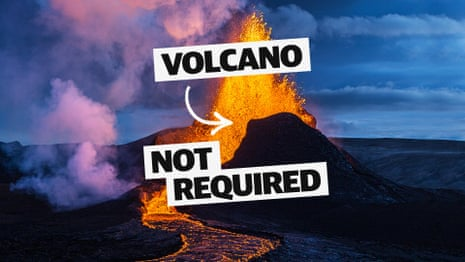

Australia’s competition watchdog has launched federal court action against Australian Gas Networks, alleging the company misled consumers with its “Love Gas” campaign.
The advertisements, which ran on free-to-air television, streaming and YouTube during 2022 and 2023, claimed household gas would be “renewable” within a generation.
- Sign up for Guardian Australia’s breaking news email
But Australian Gas Networks did not have reasonable grounds for making that claim, according to the Australian Competition and Consumer Commission (ACCC), given the significant technical and economic barriers to distributing renewable gas to households.
“We allege that Australian Gas Networks engaged in greenwashing in its ‘Love Gas’ ad campaign,” the ACCC chair, Gina Cass-Gottlieb, said.
“We say these ads were intended to encourage consumers to connect to, or remain connected to, Australian Gas Networks’ distribution network and to purchase gas appliances for their homes, based on the misleading impression they would receive ‘renewable gas’ within a generation.”
The advertisements featured a young girl and her father using gas appliances in the home, with voiceovers that included “it’s becoming renewable”. Each ended with the company’s logo next to a green flame, along with the words: “Love gas. Love a renewable gas future” – with no qualifications, fine print or disclaimers.
“Renewable gas” usually refers to a mix of hydrogen and fossil gas .
A spokesperson for Australian Gas Networks said they were disappointed with the ACCC’s decision to start proceedings and they would defend the claims.
“We always strive to provide clear and accurate communications about the role and benefits of natural gas today and renewable gas into the future,” the spokesperson said.
The ACCC said it began the investigation after complaints from consumers and the Australian Conservation Foundation (ACF).
The ACF chief executive, Kelly O’Shanassy, welcomed the ACCC’s court action.
“Gas is a polluting fossil fuel that when dug up and burned releases billions of tonnes of emissions, driving global warming and dangerous climate-fuelled events like floods, fires and droughts,” she said.
“The gas industry knows fossil fuels are not renewable but it continues to try and hoodwink Australians into thinking gas is good for us.”
ACF’s original complaint, made in 2022, said the ads were misleading because not all forms of hydrogen were renewable, and most products being developed were blended with fossil gas.
Why unlimited green energy is closer than people think – video
The climate organisation Comms Declare has also filed several complaints about the company’s use of the term “renewable gas”.
“We hope the misleading term ‘renewable gas’ can now be buried once and for all,” founder Belinda Noble said. “You can’t re-use something that has been burned, and you shouldn’t promise to deliver a product that is not viable.”
Cass-Gottlieb said businesses making environmental claims about the future must have reasonable grounds, or would be taken to be misleading under the Australian consumer law.
“Businesses must take care when they promote emissions-reduction measures that their claims can be backed up with evidence, and that they are realistic about emerging energy technologies and when changes are likely to be achieved.”